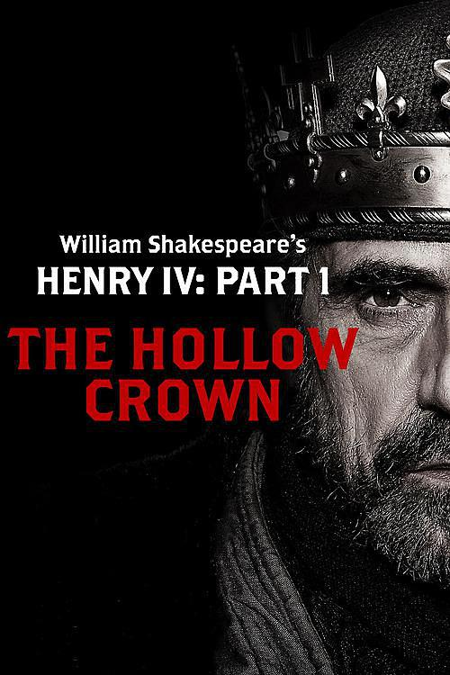

也被稱為博林布魯克的亨利（Henry (of) Bolingbroke /ˈbɒlɪŋbrʊk/），英格蘭國王和愛爾蘭領主，1399年到1413年在位。同時也繼承從祖父愛德華三世開始的，宣稱對法蘭西王國的統治。
亨利出生在林肯郡的博靈布羅克城堡。 他的父親，蘭開斯特公爵岡特的約翰是愛德華三世的第四個兒子，也是存活到成年的第三子，在亨利的堂兄理查二世的大部分統治時期，都享有相當大的權力，並成為了阿基坦公爵，但最終亨利推翻了他的堂兄。亨利的母親布蘭奇是亨利·金雀花（1310-1361）和博蒙特的伊莎貝爾的女兒，是蘭開斯特的重要繼承人，因此他成為第一位金雀花王朝的分支蘭開斯特家族的英格蘭國王，也成為自諾曼征服以來第一位以英語為母語，而不是以法語為母語的英格蘭國王。
在他10歲的時候（最多不超過13歲）他的同父異母的哥哥愛德華被謀殺。埃塞爾雷德被認為與謀殺無關，但兇手卻是他的母親埃爾夫斯里斯的侍從。
亨利與理查二世國王的關係比他父親與國王的關係更為複雜。亨利是理查的第一個堂兄弟和童年的玩伴。1377年，祖父愛德華三世去世後，亨利獲得了德比伯爵的頭銜，同年，亨利和理查共同被授予了嘉德勳章。在理查統治的初期，亨利對國王還是很忠誠的。在理查加冕時，亨利負責執御劍。在他的父親為卡斯蒂利亞和萊昂的王冠而戰，不在國內的時候，亨利代替父親管理蘭開斯特郡（第一次是1378年，第二次是從1386年到1389年）。這也是他在政治舞台上的首次表演。1384年，亨利還獲得了北安普頓伯爵頭銜。
但是到了1387年，亨利成為了反對國王過分行為的訴追派貴族的一員。1387年12月19日，在拉多科橋戰役中，他擊敗了由羅伯特·德·維爾率領的王室軍隊。這場勝利使得訴追派貴族可以在1388年的殘酷國會之後，能夠清洗國王的寵臣們。理查在1389年5月重獲權力。在理查恢復權力之後，三名主要的訴追派貴族 - 理查二世的叔叔伍德斯托克的托馬斯，第一代格洛斯特公爵，理察·菲茨阿蘭，第十一代阿倫德爾伯爵和托馬斯·博尚被捕，並且分別被判處死刑或監禁。但博林布魯克被堂兄理查饒恕了。不僅如此，理查還將亨利從伯爵升為赫里福德公爵。
1390年全年，亨利都在率領他的300名騎士參加條頓騎士團對維爾紐斯（立陶宛大公國的首都）的一次不成功的圍攻。在這次遠征中，他購買了300名被俘虜的立陶宛貴族，並把他們帶回英格蘭。1392年，亨利再次加入條頓騎士團的北方十字軍征服古普魯士人，第二次遠征立陶宛，這一次他僱傭了一些十字軍騎士。他的軍隊超過了100人，其中包括一些長弓手，還有六名吟遊詩人，蘭開斯特總共為此花費了4,360英鎊。儘管亨利和他的十字軍戰士努力奮戰，但對維爾紐斯的長達兩年的圍攻依然以失敗告終。1392到1393年間，亨利還前往聖地，在耶路撒冷朝聖，並且在聖墓和橄欖山獻祭。從此，他發誓要帶領一支十字軍「將耶路撒冷從異教徒手中解救出來」，但是他的願望並沒有實現。1393年底，他返回英格蘭。
莫布雷和博林布魯克之間的決鬥被理查的命令打斷了。
1398年，亨利·博林布魯克與國王的關係遇到了第二次危機。在這一年，博林布魯克的一則關於理查二世統治的言論被第一代諾福克公爵托馬斯·德·莫布雷解釋為叛國。兩位公爵決定在卡盧頓城堡(莫布雷在考文垂的家)附近的戈斯福德綠地進行榮譽決鬥。然而，在決鬥發生之前，理查二世突然決定終止決鬥，以避免流血衝突，判決將亨利流放10年（經亨利父親岡特的約翰同意），而莫布雷則被終生流放。亨利跑到了巴黎避難，然後又到了布列塔尼。
岡特的約翰於1399年2月3日在萊斯特城堡去世。不知為什麼，理查取消了允許亨利自動繼承岡特土地的法律文件。因此，亨利需要向理查申請，才能獲得封地。經過一段時間的猶豫之後，亨利與流亡的前坎特伯雷大主教托馬斯·阿倫德爾會面，阿倫德爾因為參與了追訴派貴族的政變，而失去了大主教的職位。
1399年6月24日，他在約克郡的拉溫斯普秘密登陸。亨利任命阿倫德爾為顧問，開始了軍事行動，沒收反對他的人的土地，並命令士兵摧毀柴郡的大部分地區。大多數騎士和國王信任的臣子都跟隨國王去了愛爾蘭，因此亨利在向南部進軍的過程中並沒有真正地遇到阻力。約克公爵蘭利的埃德蒙負責在國王不在時保衛王國，但他也沒有其他辦法，只能選擇投靠亨利。
同時，理查從愛爾蘭返回的時間卻被推遲了，他7月24日才趕到威爾斯。然後，他於8月12日前往康維與諾森伯蘭伯爵會面，進行談判[。一個星期之後，理查二世去了弗林特城堡會見亨利，希望能夠從亨利那裡獲得保全自己生命的承諾。隨後被囚禁的國王跟隨亨利返回倫。他於9月1日到達倫敦，隨即被關進倫敦塔。
愛德華三世的繼承權
亨利下定決心登上王位，但他必須使這個行為合法化。通常的說法是理查是因為他的暴政和無能，丟掉王位的。根據愛德華三世1376年的繼承人限定，亨利是下一順位的王位繼承人。這一繼承限定明確了長子繼承制，也被稱為薩利克法。那時，國王的女兒繼承王位的順位是沒有國王的兄弟高的。事實上，根據當時的觀點，婦女沒有繼承王位的權利：女性繼承人的唯一先例是馬蒂爾達皇后，這引發了與另一個主角瑪蒂爾達姑姑（不是她的叔叔）的兒子長時間的內戰。然而，根據普通法（處理農民和商人等普通民眾的房屋和租約的法律），王位繼承人應該是第五代馬奇伯爵埃德蒙·莫蒂默，是愛德華三世的第三個兒子（存活到成年的第二個兒子）安特衛普的萊昂內爾的女兒的繼承人。博林布魯克的父親岡特的約翰，是愛德華的第四個兒子，也是存活到成年第三個兒子。亨利強調了自己的父系繼承權，而馬奇的繼承權則來自他的祖母。
然而，關於繼承權的質疑從未消除。問題在於，亨利只是最突出的男性繼承人，但不是愛德華三世的最高順位的男性繼承人。雖然他依照愛德華三世1376年的限定繼承，繼承了王位， 但伊恩·莫蒂默博士在他出版於2008年的亨利四世傳記中指出，這一點可能隨著理查二世1399的退位而被理查二世的限定繼承取代（參見伊恩·莫蒂默，"亨利四世的恐懼"，附錄二，第366頁-369頁）。因此，亨利需要解決莫蒂默的高順位，使自己的繼承合法。而當莫蒂默的繼承權和約克派的繼承權最終合併到約克公爵理查·金雀花一人身上時，這個問題更加難以解決了。約克公爵是愛德華三世的繼承人，也是亨利的孫子亨利六世的假定繼承人（因為需要男性繼承，亨利四世的其他兒子沒有男性繼承人，而根據法律的博福特家族被排除在王位之外）。蘭開斯特王朝最終被愛德華四世通過玫瑰戰爭推翻，愛德華四世就是第三代約克公爵約克的理查的兒子。
統治
根據官方的說法，9月29日，理查自願讓位於亨利。9月30日，按照他的要求，他被帶到了議會，宣布放棄王位，他還面臨著33項指控（包括對上帝懲罰的報復），並且不被允許為自己辯護。議會接受了理查的退位申請，判處理查無期徒刑，任命亨利·博林布魯克為國王，似乎整個國家都支持亨利。1399年10月13日，亨利在倫敦的西敏教堂，由坎特伯雷大主教托馬斯·阿倫德爾為其加冕。在加冕禮上，他向貴族們進行了演講，這可能是1066年諾曼征服後，英格蘭君主第一次以英語發表演說。
前任
亨利作為君主所面臨的第一個重要問題就是如何處理被廢黜的理查。理查被廢黜後的命運不是很清楚。他於1399年10月從倫敦塔被帶到龐特弗雷特城堡。1400年1月初，一起試圖讓理查二世復辟的針對國王的暗殺陰謀（主顯日起義）被挫敗，此後不久，可能是在1400年2月14日，理查便死於囚禁，雖然對確切的日期和真正死因的真正原因都有很大的爭議，很可能是被餓死的。他當時只有33歲。雖然很多人懷疑亨利將他的前任謀殺了，但至今也沒有實質性的證據能夠證明。當時的一些歷史記錄者聲稱，沮喪的理查是絕食而死的，但這些人可能不了解理查的性格。雖然官方記錄顯示，直到2月17日，對國王的食物供應也沒有停止，一些歷史記錄者據此認為理查不可能是死於2月14日，但是這條證據並沒有辦法推導出這個結論。目前可以確認的是，他不是因為遭受暴力而死亡，因為在對他屍骨的檢查中，並沒有發現有遭受暴力的跡象；但他是否是絕食而死，還是被餓死的，尚未有定論。
理查去世後，他的遺體在舊聖保羅大教堂被公開展示，向他的支持者證明他已經死了，然後，亨利謹慎地決定於3月6日將理查埋葬在位於赫特福德郡金斯蘭利的一所道明會修道院里。後來，亨利五世國王將他的遺體帶回倫敦，並埋葬於理查生前在西敏教堂為自己預定的墓地。
理查二世的葬禮
理查仍然活著的傳言持續了一段時間，但在英格蘭，始終沒有很多人相信。在蘇格蘭，一名由於相貌相似而被認定為理查的男子由奧爾巴尼公爵羅伯特·斯圖爾特安排住在斯特靈城堡，並對外宣稱這是一位重要人物，對羅拉德派在英格蘭對付蘭開斯特家族的幾次陰謀負責。他於1419年去世，當時的人發現他原本就是一名乞丐。但他還是以國王的身份被埋葬在斯特靈的道明會修道院里。
反抗
亨利作為國王，花了他的大部分經歷來應付各種陰謀，反叛和暗殺。
在亨利統治的頭十年間，叛亂一直在持續，比較重要有兩次，一次是1400年由自稱威爾斯親王的歐文·格蘭道爾領導的起義，另一次是第一代諾森伯蘭伯爵亨利·珀西領導的叛亂。藉助於他的長子蒙茅斯的亨利的軍事能力，國王成功的挫敗了這些叛亂。
到了亨利統治的最後一年，反叛愈演愈烈。理查還活著的謠言又開始傳播了，在這一年，一些蘇格蘭使者在英格蘭的民間四處穿梭，宣稱理查就在蘇格蘭，只需要內應們的一個信號，他便會返回倫敦並恢復王位。
理查國王的老侍從在倫敦四處宣揚他的主人還活著，就在蘇格蘭。薩瑟客人也被埃里亞斯·萊維特（萊維特）爵士和他的夥伴托馬斯·克拉克煽動起來叛亂，托馬斯·克拉克還承諾蘇格蘭會援助這次起義。但最終，叛亂還是失敗了。騎士萊維特被釋放了，但他的追隨者們則都被投入了倫敦塔。
統治危機
由於病魔纏身，亨利漸漸喪失了權力。從1410年1月開始，亨利·博福特和托馬斯·博福特--岡特的約翰的合法兒子--以叔叔的身份輔佐威爾斯親王亨利治理國家。很快，在威爾斯親王的支持下，托馬斯·阿倫德爾被罷免。
威爾斯親王亨利（站立者），從1410年開始擴大了權力。（藏於倫敦大英圖書館，大約1411年的微型畫，阿倫德爾手稿38號，第37頁）
儘管博福特曾經爭取讓亨利四世遜位，但父子之間的爭論好像只是政治上的，威爾斯親王的對外和對內政策的觀點與國王有比較大的差異。國王在1411年11月拿回了權力，親王的對頭因而拼命的詆毀親王，父子關係由此變得緊張。因此直到1413年的國王去世之前，蘭開斯特的托馬斯才是英格蘭的主人。
疾病與死亡
到了亨利的晚年，他面臨著非常嚴重的健康問題。他本來就得了一種皮膚病，但更嚴重的是，在1405年6月，1406年4月，1408年6月，在1408-1409年的冬天，1412年12月，遭受了一系列嚴重的急性疾病的襲擊，1413年3月的那次是最致命的。醫學史專家長期以來一直在討論他的病症。皮膚病可能是麻風病（15世紀與現代醫學的認證不一定完全相同），也有可能是銀屑病或其他疾病。而那幾次急性疾病範圍則寬泛的多，從癲癇到某種形式的心血管疾病，有各種各樣的解釋。一些中世紀作家認為，因為他對約克大主教理察·勒·斯普羅德的處理，使他遭受了麻風病的懲罰，約克大主教在1405年6月因為政變失敗，被亨利下令處決。
根據霍林斯赫德的說法，有預言宣稱，亨利將死在耶路撒冷，該預言也出現在莎士比亞的戲劇中。亨利據此認為這意味著他將會死於十字軍東征的途中。但實際上，他是在1413年3月20日，議會召開期間，死於西敏教堂院長的「耶路撒冷室」里。[3]他的遺囑執行人托馬斯·蘭利當時就在他的身邊。
葬禮
儘管幾位前任都選擇葬在西敏教堂，但亨利和他的第二任妻子，英格蘭王后納瓦拉的瓊，都葬在了坎特伯雷大教堂，就在聖三一禮拜堂的北部，毗鄰聖托馬斯·貝克特的神龕。當時，對貝克特的崇拜仍然十分狂熱，修道院的記錄和諸如喬叟的《坎特伯雷故事集》這樣的文學作品中的描述都證明了這一點，亨利似乎也特別狂熱。他安葬在坎特伯雷的原因是有爭議的，這似乎是一種政治權謀，亨利很有可能需要將自己與聖人聯繫起來，以使得他在理查二世手中奪取王位後，獲得執政的合法性。一個證據是，在加冕典禮上，他進行塗油禮時用的聖油據傳說是貝克特1170年臨死前由聖母瑪利亞交給他的；當時，這種油是盛放在一個獨特的鷹形容器中。根據故事的一個版本，聖油最終傳到了亨利的外祖父，第一代蘭開斯特公爵格蘭斯蒙特的亨利的手中。
亨利有意與聖托馬斯有所聯繫的另一個證據在於墳墓本身的結構。他墳墓西端的木板上繪有一幅貝克特殉難的圖畫，而在墓葬之上的木製頂冠畫上了亨利個人的座右銘「Soverayne」，間或出現頭戴王冠的金黃色的鷹。同樣地，華蓋上的繪畫主要是三枚大幅紋章，周圍環繞著SS型項鍊，每個圈裡面都繪有一隻金色的鷹。這種鷹的圖案象徵著亨利的加冕油和聖托馬斯的關聯。在國王去世一段時間後，為國王和王后又建造了一座更壯觀的墳墓，這可能是由瓊王后自己委託和支付修建的。該墳墓頂部刻有國王和王后的雪花石膏雕像，頭戴王冠，穿著禮袍。墳墓在1832年被打開，歷史學家發現亨利的遺體保存完好，據此推定，雕像很好的還原了國王和王后的本來面貌。
轉自:維基百科